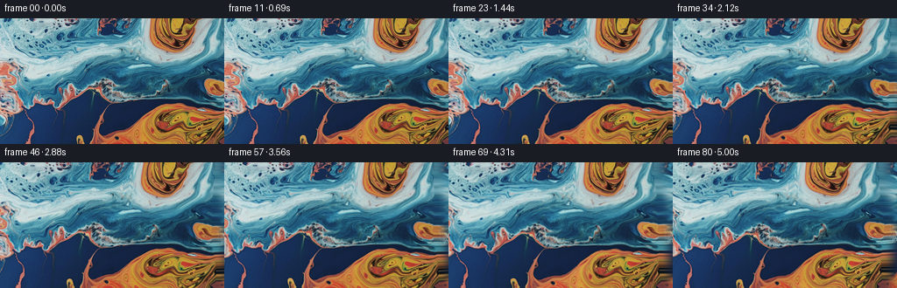
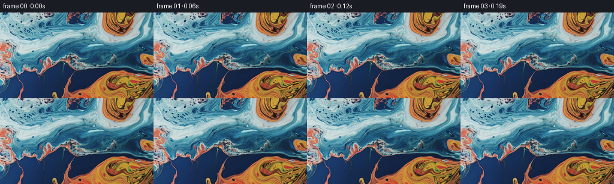
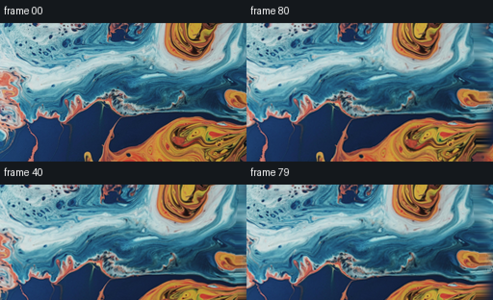
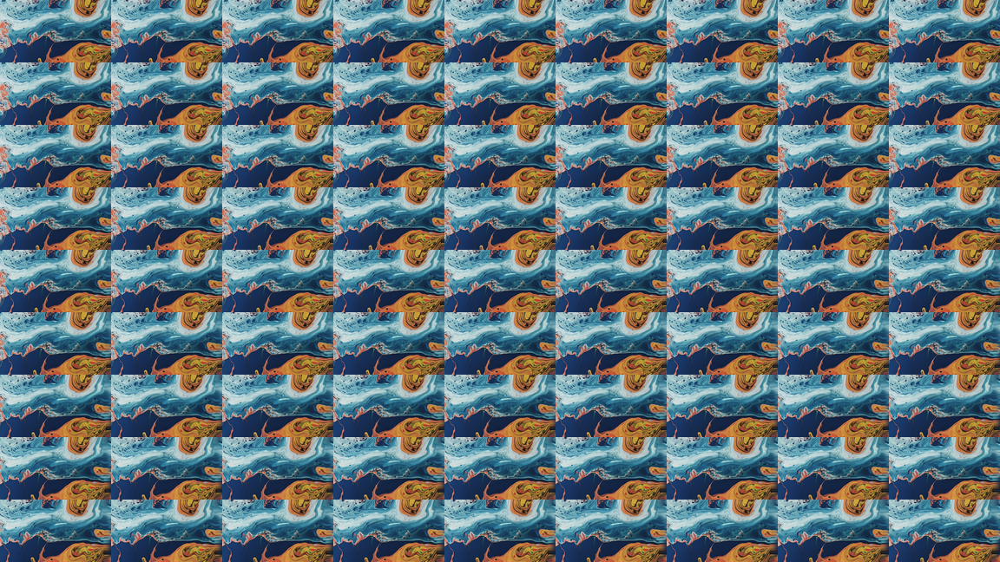

CODING AGENTS AS PIXEL WORLD MODELS
traex/DeepSeek-V4.1-Flash · 0002_s4
点击播放 · 原生 RGB 像素
逐轮保存的候选
回放视频、检查图与代码变化。
每份候选均可单独播放。实际图片检查记录在下方工具轨迹中。
候选 01播放与检查图
点击播放 · 原生 RGB 像素


展开代码变化
--- 上一保存版本
+++ 本次保存版本
@@ -0,0 +1,165 @@
+from pathlib import Path
+
+import cv2
+import numpy as np
+from PIL import Image
+
+import artifact_io
+
+
+CASE_DIR = Path(__file__).resolve().parent
+FRAME_COUNT = 81
+WIDTH = 256
+HEIGHT = 144
+FPS = 16.0
+
+
+def smoothstep(x):
+ x = np.clip(x, 0.0, 1.0)
+ return x * x * (3.0 - 2.0 * x)
+
+
+def resize_float(image, width, height):
+ return cv2.resize(image, (width, height), interpolation=cv2.INTER_CUBIC)
+
+
+def make_extended_canvas(image):
+ """Create a plausible continuation of the marbled surface to the right."""
+ height, width = image.shape[:2]
+ extension = width // 2
+ canvas = np.zeros((height, width + extension, 3), dtype=np.float32)
+ canvas[:, :width] = image
+
+ # A mirrored source gives continuous colors at the join. A low-frequency
+ # warp removes the overly regular appearance of a plain mirror.
+ mirror = image[:, ::-1].copy()
+ yy, xx = np.mgrid[0:height, 0:extension].astype(np.float32)
+ phase = np.stack(
+ (
+ xx / extension * 2.0 * np.pi,
+ yy / height * 2.0 * np.pi,
+ ),
+ axis=-1,
+ )
+ wx = (
+ 7.0 * np.sin(1.7 * phase[..., 0] + 0.45 * phase[..., 1])
+ + 3.0 * np.sin(3.2 * phase[..., 0] - 1.1 * phase[..., 1])
+ )
+ wy = (
+ 3.2 * np.sin(1.25 * phase[..., 0] + 1.7 * phase[..., 1])
+ + 1.4 * np.sin(4.1 * phase[..., 1] - 0.7 * phase[..., 0])
+ )
+ map_x = np.ascontiguousarray(extension - 1.0 - xx + wx, dtype=np.float32)
+ map_y = np.ascontiguousarray(np.clip(yy + wy, 0, height - 1), dtype=np.float32)
+ extended = cv2.remap(
+ mirror,
+ map_x,
+ map_y,
+ interpolation=cv2.INTER_CUBIC,
+ borderMode=cv2.BORDER_REFLECT_101,
+ )
+
+ join = np.linspace(0.0, 1.0, extension, dtype=np.float32)[None, :, None]
+ blend = smoothstep(join / 0.16)
+ canvas[:, width:] = extended * blend + image[:, -1:, :] * (1.0 - blend)
+ return canvas
+
+
+def curl_field(x, y, t):
+ """Smooth, divergence-free displacement sampled in output coordinates."""
+ # The broad flow bends the marbled bands while leaving their colors intact.
+ tau = 2.0 * np.pi * t
+ dx = (
+ 2.8 * np.sin(0.031 * y + 0.011 * x + 0.92 * tau)
+ + 1.35 * np.sin(0.067 * y - 0.026 * x - 1.25 * tau + 1.4)
+ + 0.65 * np.sin(0.111 * y + 0.042 * x + 1.8 * tau)
+ )
+ dy = (
+ 1.15 * np.sin(0.019 * x - 0.022 * y + 0.73 * tau + 0.3)
+ + 0.62 * np.sin(0.053 * x + 0.044 * y - 1.55 * tau)
+ + 0.25 * np.sin(0.095 * x - 0.071 * y + 2.2 * tau + 0.9)
+ )
+ return dx, dy
+
+
+def add_vortex(dx, dy, x, y, cx, cy, strength, radius):
+ """Add a compact, smooth rotational eddy."""
+ rx = x - cx
+ ry = y - cy
+ r2 = rx * rx + ry * ry
+ falloff = np.exp(-r2 / (2.0 * radius * radius))
+ # The eddy is tapered toward the borders to avoid pulling in the frame.
+ strength *= falloff
+ dx += strength * (-ry / (radius + 1e-3))
+ dy += strength * (rx / (radius + 1e-3))
+
+
+def warp_frame(canvas, t):
+ height, width = HEIGHT, WIDTH
+ yy, xx = np.mgrid[0:height, 0:width].astype(np.float32)
+ pan = 17.0 * smoothstep(t)
+ dx, dy = curl_field(xx, yy, t)
+ ramp = smoothstep(t)
+ dx *= ramp
+ dy *= ramp
+
+ # Two dominant currents follow the warm swirl at lower right and the
+ # cooler ribbons crossing the middle of the source.
+ add_vortex(
+ dx, dy, xx, yy,
+ cx=214.0 + 3.0 * np.sin(1.3 * np.pi * t),
+ cy=114.0 - 2.0 * np.cos(1.1 * np.pi * t),
+ strength=2.0 * ramp,
+ radius=47.0,
+ )
+ add_vortex(
+ dx, dy, xx, yy,
+ cx=89.0 + 5.0 * np.sin(0.8 * np.pi * t + 0.7),
+ cy=58.0 + 2.0 * np.cos(1.4 * np.pi * t),
+ strength=-1.35 * ramp,
+ radius=43.0,
+ )
+ add_vortex(
+ dx, dy, xx, yy,
+ cx=27.0,
+ cy=91.0 + 2.0 * np.sin(1.5 * np.pi * t),
+ strength=0.72 * ramp,
+ radius=32.0,
+ )
+
+ map_x = np.ascontiguousarray(xx + pan + dx, dtype=np.float32)
+ map_y = np.ascontiguousarray(yy + dy, dtype=np.float32)
+ warped = cv2.remap(
+ canvas,
+ map_x,
+ map_y,
+ interpolation=cv2.INTER_CUBIC,
+ borderMode=cv2.BORDER_REFLECT_101,
+ )
+
+ # A restrained moving sheen suggests light reflecting from the liquid.
+ lum = warped.mean(axis=2)
+ highlight = np.exp(-((lum - 145.0) / 55.0) ** 2)
+ sweep = np.sin(0.030 * (xx - pan) + 0.045 * yy - 3.0 * np.pi * t)
+ sheen = (0.012 + 0.020 * smoothstep(t)) * highlight * np.clip(sweep, 0.0, 1.0)
+ warped += sheen[..., None] * np.array([235.0, 244.0, 255.0], dtype=np.float32)
+ return np.clip(warped + 0.5, 0.0, 255.0).astype(np.uint8)
+
+
+def generate():
+ source = np.asarray(Image.open(CASE_DIR / "first_frame.png").convert("RGB"))
+ if source.shape != (HEIGHT, WIDTH, 3):
+ raise ValueError(f"Unexpected source frame shape: {source.shape}")
+
+ canvas = make_extended_canvas(source.astype(np.float32))
+ frames = np.empty((FRAME_COUNT, HEIGHT, WIDTH, 3), dtype=np.uint8)
+ frames[0] = source
+ for index in range(1, FRAME_COUNT):
+ frames[index] = warp_frame(canvas, index / (FRAME_COUNT - 1))
+ return frames
+
+
+if __name__ == "__main__":
+ result = generate()
+ artifact_io.save(result, CASE_DIR)
+ print(f"Saved {len(result)} frames to {CASE_DIR}")
可观测工具轨迹
实际执行的命令与返回图片。
命令 1exit 0
/bin/bash -c "pwd && rg --files -g '"'!*__pycache__*'"' | sed -n '1,160p'"
命令 2exit 0
/bin/bash -c "printf '%s\\n' '--- prompt.txt ---'; cat prompt.txt; printf '%s\\n' '--- GENERATION_RULES.md ---'; cat GENERATION_RULES.md"
命令 3exit 0
/bin/bash -c 'file first_frame.png && identify first_frame.png 2>/dev/null || true; command -v ffmpeg; command -v python3; command -v node'
命令 4exit 0
/bin/bash -c 'cat task_spec.json'
命令 5exit 0
/bin/bash -c "sed -n '1,240p' artifact_io.py"
命令 6exit 0
/bin/bash -c "sed -n '1,220p' player_template.html"
命令 7exit 0
/bin/bash -c "python3 - <<'PY' import importlib.util for m in ['numpy','PIL','scipy','cv2','imageio','matplotlib']: print(m, bool(importlib.util.find_spec(m))) PY"
命令 8exit 0
/bin/bash -c "git status --short 2>/dev/null || true; python3 - <<'PY'
from PIL import Image
im=Image.open('first_frame.png')
print(im.mode, im.size)
PY"命令 9exit 1
/bin/bash -c 'python3 generate.py'
命令 10exit 0
/bin/bash -c 'python3 generate.py'
命令 11exit 0
/bin/bash -c "python3 - <<'PY'
import numpy as np
from PIL import Image, ImageDraw
from pathlib import Path
from generate import generate
frames=generate()
src=np.asarray(Image.open('first_frame.png').convert('RGB'))
print('shape', frames.shape, frames.dtype)
print('frame0 identical', np.array_equal(frames[0],src), 'max diff', np.abs(frames[0].astype(int)-src.astype(int)).max())
d=np.abs(frames[1:].astype(np.int16)-frames[:-1].astype(np.int16))
print('consecutive mean abs diff min/median/max', d.mean((1,2,3)).min(), np.median(d.mean((1,2,3))), d.mean((1,2,3)).max())
print('consecutive p99 diff median/max', np.median(np.percentile(d,99,axis=(1,2,3))), np.percentile(d,99,axis=(1,2,3)).max())
# full-res paired endpoint
out=Image.new('RGB',(512,144*2+24),(20,24,28)); dr=ImageDraw.Draw(out)
out.paste(Image.fromarray(frames[0]),(0,24)); out.paste(Image.fromarray(frames[-1]),(256,24))
out.paste(Image.fromarray(frames[40]),(0,168+24)); out.paste(Image.fromarray(frames[-2]),(256,168+24))
dr.text((4,5),'frame 00',fill='white'); dr.text((260,5),'frame 80',fill='white'); dr.text((4,149+24),'frame 40',fill='white'); dr.text((260,149+24),'frame 79',fill='white')
out.resize((1024,624),Image.Resampling.NEAREST).save('endpoint_check.png')
# 81-frame strip
thumbs=[Image.fromarray(f).resize((128,72),Image.Resampling.LANCZOS) for f in frames]
sheet=Image.new('RGB',(128*9,72*9),(20,24,28))
for i,im in enumerate(thumbs): sheet.paste(im,((i%9)*128,(i//9)*72))
sheet.save('all_frames.png')
PY"命令 12exit 0
/bin/bash -c "python3 - <<'PY'
from pathlib import Path
import json
import numpy as np
from PIL import Image
import artifact_io
frames=np.stack([np.asarray(Image.open(f'frames/{i:02d}.png').convert('RGB')) for i in range(81)])
spec=json.loads(Path('task_spec.json').read_text())
z=np.load('pixels.npz')['pixels']
print('frames:', frames.shape, frames.dtype)
print('npz:', z.shape, z.dtype)
print('all artifacts:', all(Path(p).exists() for p in ['generate.py','pixels.npz','index.html','inspection.png','transition_check.png']))
print('index bytes:', Path('index.html').stat().st_size)
print('first exact:', np.array_equal(frames[0], np.asarray(Image.open('first_frame.png').convert('RGB'))))
# Confirm saved packed tensor decodes to the same RGB frames.
r=((z>>16)&255).astype(np.uint8); g=((z>>8)&255).astype(np.uint8); b=(z&255).astype(np.uint8)
decoded=np.stack((r,g,b),axis=-1).transpose(0,2,1,3)
print('npz RGB exact:', np.array_equal(decoded, frames))
PY"命令 13exit 0
/bin/bash -c "python3 - <<'PY'
from pathlib import Path
import numpy as np
from PIL import Image
frames=np.stack([np.asarray(Image.open(f'frames/{i:02d}.png').convert('RGB')) for i in range(81)])
z=np.load('pixels.npz')['pixels']
r=((z>>16)&255).astype(np.uint8); g=((z>>8)&255).astype(np.uint8); b=(z&255).astype(np.uint8)
decoded=np.stack((r,g,b),axis=-1).transpose(2,0,1,3)
print('npz RGB exact:', np.array_equal(decoded, frames))
print('pixel tensor layout:', z.shape)
print('frame files:', len(list(Path('frames').glob('*.png'))))
print('player payload present:', '__DATA__' not in Path('index.html').read_text())
PY
python3 -m py_compile generate.py"命令 14exit 0
/bin/bash -c 'git status --short -- generate.py frames pixels.npz index.html inspection.png transition_check.png endpoint_check.png all_frames.png'
命令 15exit 0
/bin/bash -c 'git check-ignore -v generate.py frames/00.png pixels.npz index.html inspection.png transition_check.png endpoint_check.png all_frames.png 2>/dev/null || true; ls -lh generate.py pixels.npz index.html inspection.png endpoint_check.png'
视觉工具实际返回图片 1

视觉工具实际返回图片 2

视觉工具实际返回图片 3

视觉工具实际返回图片 4

保存候选 1 份；完成命令 15 次；可验证图片返回 4 张。原始 API 响应与完整日志保留在本地。